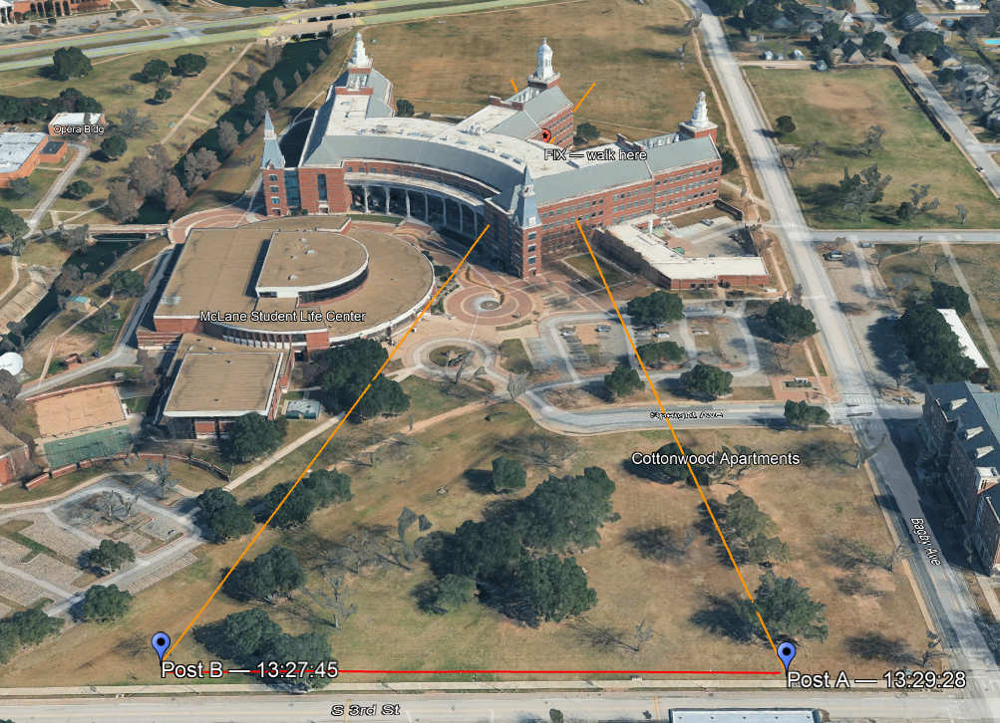
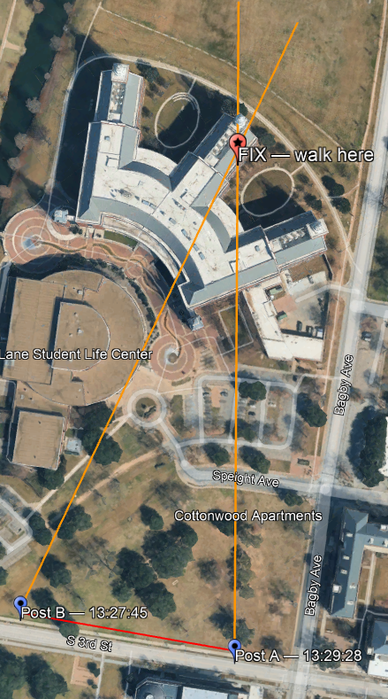
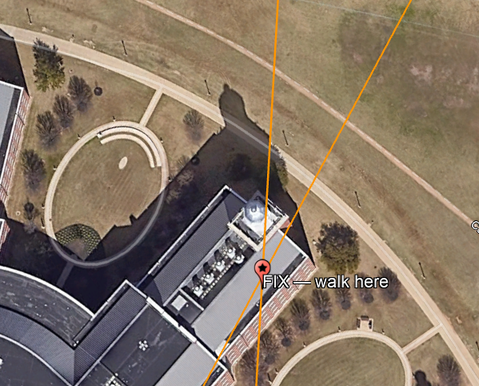
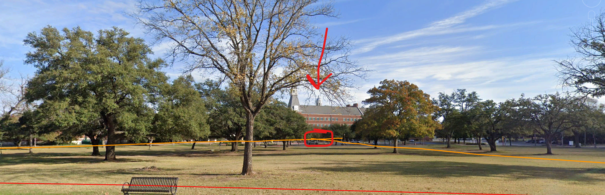
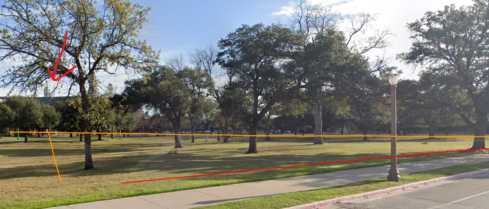
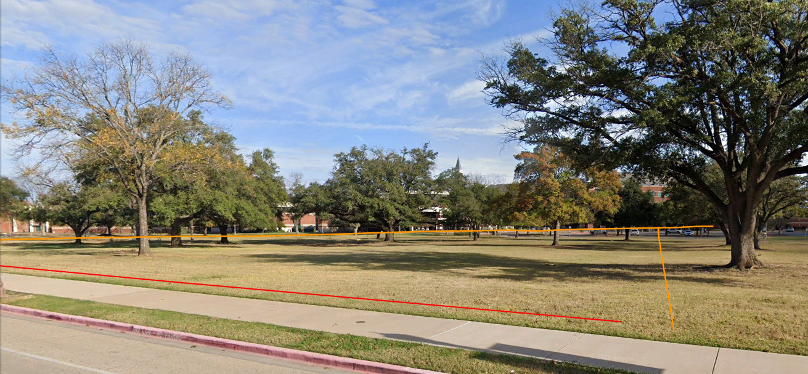
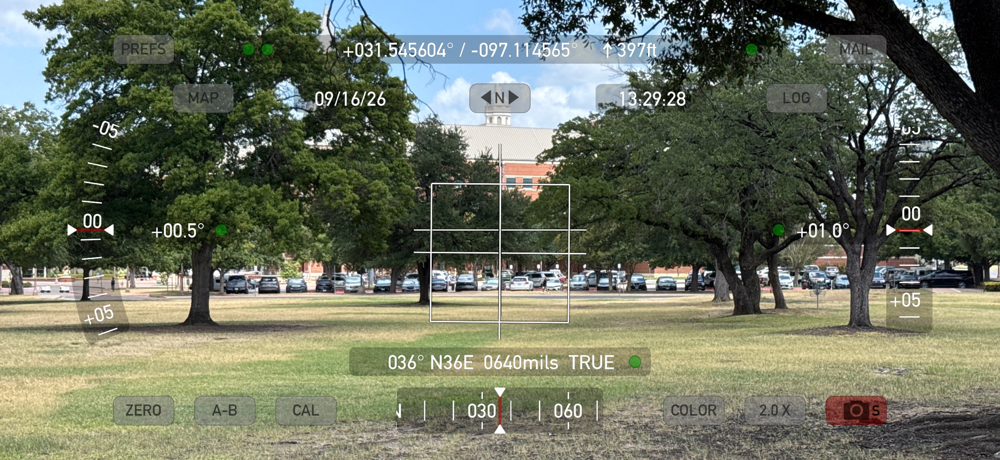
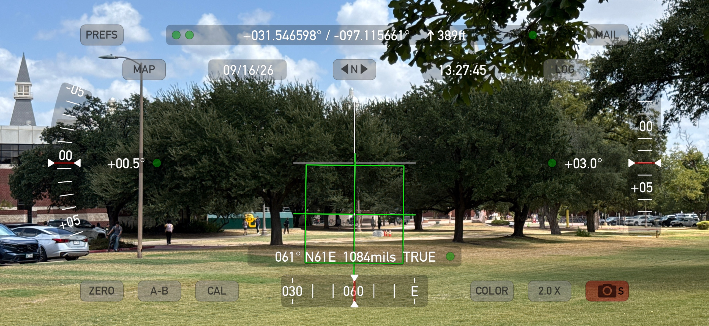
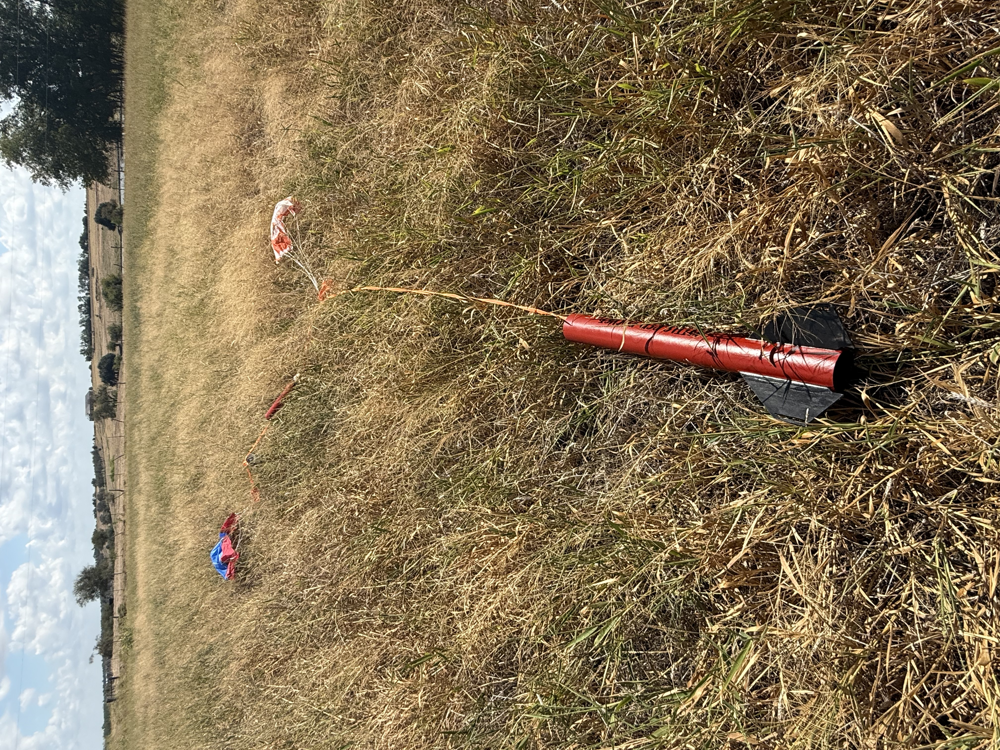
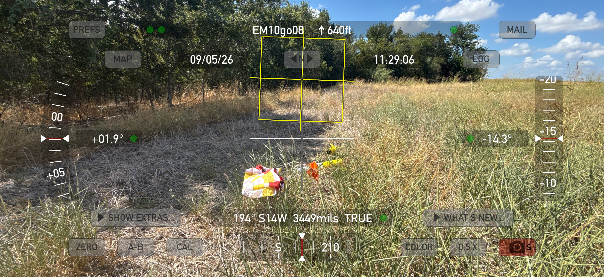

Triangulating a landing point from two bearings. Josh / W3ARD
Open the calculatorDrop in two Theodolite log files, get a coordinate. Runs entirely in your browser.
A visual bearing is only valid from the position it was taken. Cross any terrain on the way to recovery and there's no way to re-establish it.
Two spotters at known positions, each recording a bearing to the same landing, define an intersection. That intersection is a coordinate you can enter into a handheld and navigate to without line of sight.
Two spotters stand 100–150 m apart. On landing, each puts the crosshair of the Theodolite app on the spot and presses LOG, which records position, true bearing, and time. Both logs go to whoever is running the calculator, and the intersection comes back as a coordinate.
Two positions 152 m apart on the Baylor campus, both sighting a building cupola about 350 m away. Bearings were 061° and 036° true, crossing at 25°.



| Spotter A → fix | 347 m |
|---|---|
| Spotter B → fix | 352 m |
| Spotter A ↔ Spotter B | 152 m |
| Crossing angle | 25° |
| Computed fix | 31.548139, −97.112414 |
The target was clear from one end of the baseline and behind a tree from the other. The fix does not require both spotters to have an unobstructed view at the same instant.



| Spotter | Time | Position | Bearing |
|---|---|---|---|
| A | 13:29:28 | 31.545604, −97.114565 | 036° TRUE |
| B | 13:27:45 | 31.546598, −97.115661 | 061° TRUE |


Both observations are in sighting-2026-09-16.csv if you want to load them into the calculator. There is also a KML of the spotter positions, sight lines, and fix for Google Earth.
Theodolite settings, both phones:
Placement drives accuracy more than anything else. The two spotters should straddle the landing area on a line roughly perpendicular to the drift direction, not both stand on the flight line. Shallow crossing angles produce a fix stretched along the line of sight.
Put the flight card number in the app's note field. Logs are cumulative, so that is what separates one flight's observations from the next.


I'd like to fly a rocket carrying a tracker we already trust and compare three things per flight: the two-spotter fix, the tracker's final reported position, and a GPS reading taken standing at the rocket. The last one matters — a tracker's last transmission and the rocket's resting place are not always the same, and without the walk-up reading there is no way to tell which is wrong.
This does not replace a tracker. If you have one, use it. This is for the untracked flights.
{kind=link}
{kind=link}
{kind=link}
{kind=link}
{kind=link}
{kind=link}
{kind=link}
{kind=link}
{kind=link}
{kind=link}